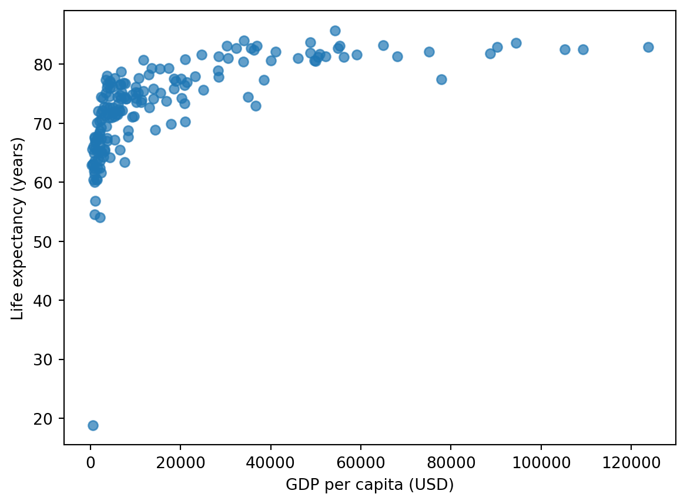
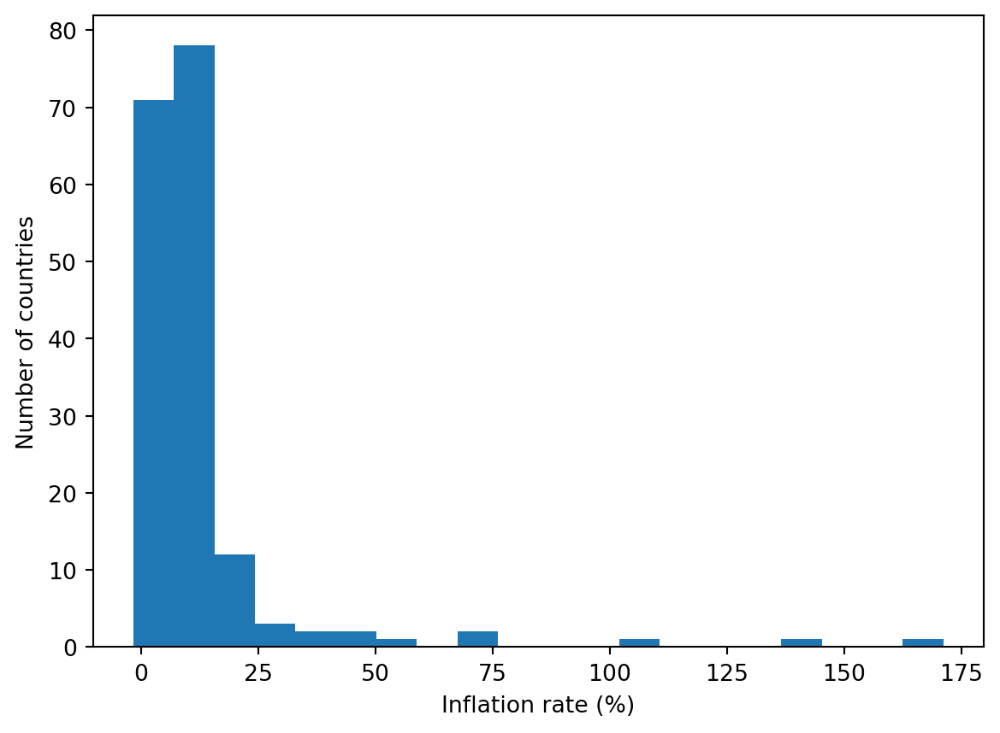
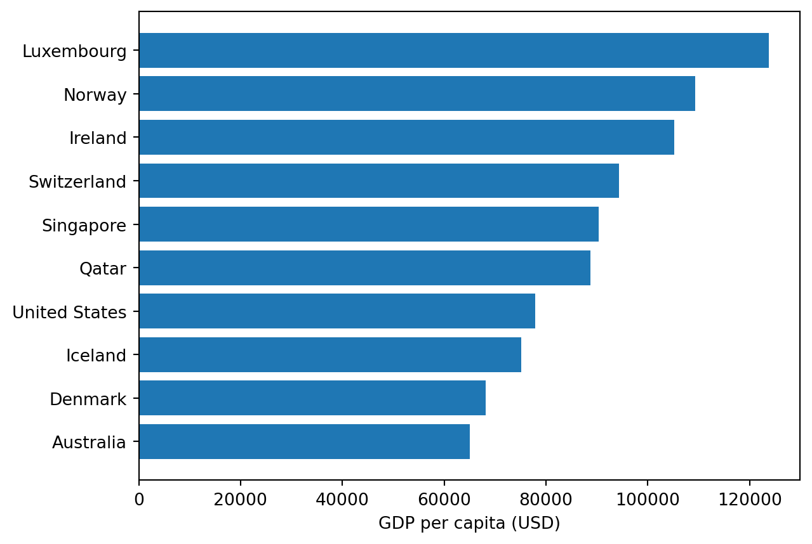

import pandas as pd
import wbgapi as wbWorld Indicators — 2022
indicators = {
'gdp_per_capita': 'NY.GDP.PCAP.CD',
'gdp_growth_rate': 'NY.GDP.MKTP.KD.ZG',
'inflation_rate': 'FP.CPI.TOTL.ZG',
'unemployment_rate': 'SL.UEM.TOTL.ZS',
'total_population': 'SP.POP.TOTL',
'life_expectancy': 'SP.DYN.LE00.IN',
'adult_literacy_rate': 'SE.ADT.LITR.ZS',
'income_inequality': 'SI.POV.GINI',
'health_expenditure_gdp_share': 'SH.XPD.CHEX.GD.ZS',
'measles_immunisation_rate': 'SH.IMM.MEAS',
'education_expenditure_gdp_share': 'SE.XPD.TOTL.GD.ZS',
'primary_school_enrolment_rate': 'SE.PRM.ENRR',
'exports_gdp_share': 'NE.EXP.GNFS.ZS'
}
# Get the list of country codes for the "World" region
country_codes = wb.region.members('WLD')
# Download data for countries only in 2022
df = wb.data.DataFrame(indicators.values(), economy=country_codes, time=2022, skipBlanks=True, labels=True).reset_index()
# Delete the 'economy' column
df = df.drop(columns=['economy'], errors='ignore')
# Create a reversed dictionary mapping indicator codes to names
# Rename the columns and convert all names to lowercase
df.rename(columns=lambda x: {v: k for k, v in indicators.items()}.get(x, x).lower(), inplace=True)
# Sort 'country' in ascending order
df = df.sort_values('country', ascending=True)
# Reset the index after sorting
df = df.reset_index(drop=True)
# Display the number of rows and columns
print(df.shape)
# Display the first few rows of the data
print(df.head(3))
# Save the data to a CSV file
df.to_csv('wdi.csv', index=False)(217, 14)
country inflation_rate exports_gdp_share gdp_growth_rate \
0 Afghanistan 13.712102 18.380042 -6.240172
1 Albania 6.725203 37.197082 4.826696
2 Algeria 9.265516 30.808979 3.600000
gdp_per_capita adult_literacy_rate primary_school_enrolment_rate \
0 357.261153 NaN NaN
1 6846.426694 NaN 96.371230
2 4961.552577 NaN 105.747154
education_expenditure_gdp_share measles_immunisation_rate \
0 NaN 56.0
1 2.729770 86.0
2 4.749247 79.0
health_expenditure_gdp_share income_inequality unemployment_rate \
0 23.088169 NaN 14.100
1 6.193681 NaN 10.137
2 3.623043 NaN 12.346
life_expectancy total_population
0 65.617 40578842.0
1 78.769 2777689.0
2 76.129 45477389.0 This report explores selected 2022 World Development Indicators: - GDP per capita (USD) - Life expectancy (years) - Inflation rate (%) These represent key economic, demographic, and financial dimensions across countries.
import pandas as pd
df = pd.read_csv("wdi.csv")
df = df[["country", "gdp_per_capita", "life_expectancy", "inflation_rate"]].dropna()
df.head(3)| country | gdp_per_capita | life_expectancy | inflation_rate | |
|---|---|---|---|---|
| 0 | Afghanistan | 357.261153 | 65.617 | 13.712102 |
| 1 | Albania | 6846.426694 | 78.769 | 6.725203 |
| 2 | Algeria | 4961.552577 | 76.129 | 9.265516 |
Exploratory Data Analysis
desc = df[["gdp_per_capita", "life_expectancy", "inflation_rate"]].describe().T.reset_index()
desc.rename(columns={"index": "indicator"}, inplace=True)
desc| indicator | count | mean | std | min | 25% | 50% | 75% | max | |
|---|---|---|---|---|---|---|---|---|---|
| 0 | gdp_per_capita | 174.0 | 17468.036627 | 23616.374008 | 250.634225 | 2589.209681 | 6788.136647 | 20981.717143 | 123719.658916 |
| 1 | life_expectancy | 174.0 | 72.919539 | 7.956882 | 18.818000 | 67.731750 | 74.133000 | 77.894226 | 85.708000 |
| 2 | inflation_rate | 174.0 | 12.742605 | 19.923911 | -1.610680 | 5.361652 | 7.949251 | 11.840016 | 171.205491 |
GDP per capita averages about $17,468 with a very wide range, indicating large cross-country inequality. Life expectancy averages 72.9 years with most countries between roughly 68 and 78. Inflation averages 12.7% and is highly dispersed.
n_countries = df["country"].nunique()
n_countries174corr = df[["gdp_per_capita", "life_expectancy", "inflation_rate"]].corr()
corr| gdp_per_capita | life_expectancy | inflation_rate | |
|---|---|---|---|
| gdp_per_capita | 1.000000 | 0.601626 | -0.164250 |
| life_expectancy | 0.601626 | 1.000000 | -0.068469 |
| inflation_rate | -0.164250 | -0.068469 | 1.000000 |
Interpretation: GDP per capita and life expectancy are moderately positively correlated (r ≈ 0.60). Inflation shows weak negative correlations with both variables.
Visualizations Figure: Life expectancy vs GDP per capita
import matplotlib.pyplot as plt
#| label: fig-scatter
#| fig-cap: "Life expectancy vs GDP per capita (2022) [@worldbankWDI]."
#| echo: false
import matplotlib.pyplot as plt
plt.figure()
plt.scatter(df["gdp_per_capita"], df["life_expectancy"], alpha=0.7)
plt.xlabel("GDP per capita (USD)")
plt.ylabel("Life expectancy (years)")Text(0, 0.5, 'Life expectancy (years)')
Figure: Inflation rate distribution across countries
Text(0, 0.5, 'Number of countries')

Figure: Top 10 GDP per capita countries
Text(0.5, 0, 'GDP per capita (USD)')

As shown in Figure ?@fig-scatter, higher GDP per capita generally aligns with longer life expectancy. The spread of inflation across countries in Figure Figure 1, together with the skewed top incomes in Figure Figure 2, explains why dispersion in Table ?@tbl-summary is large.
Indicators come from the World Development Indicators accessed via wbgapi (Bank 2022b; Group 2022). Analysis uses pandas and matplotlib (McKinney 2010; Hunter 2007).
# Export dataset for slides to reuse
df.to_csv("world_indicators_2022.csv", index=False)References
Bank, World. 2022a. “World Bank Open Data: World Development Indicators.” https://data.worldbank.org/indicator.
———. 2022b. “World Development Indicators.” https://databank.worldbank.org/source/world-development-indicators.
Group, World Bank. 2022. Wbgapi: World Bank API for Python. https://pypi.org/project/wbgapi/.
Hunter, John D. 2007. “Matplotlib: A 2D Graphics Environment.” Computing in Science & Engineering 9 (3): 90–95.
McKinney, Wes. 2010. “Data Structures for Statistical Computing in Python.” Proceedings of the 9th Python in Science Conference, 51–56.